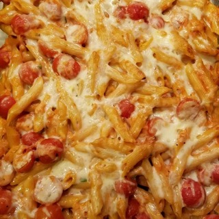

Pasta Bake

One of my favorite midweek pasta bakes - my whole family loves it and there is not much prep. Once the pasta
bake is in the oven, you can make a salad or set the table and then it's time to eat.
Ingredients:
- 1 (16 ounce) package penne pasta
- 1 tablespoon olive oil
- 1 onion, finely chopped
- 3 cloves garlic, minced
- 3 (6 ounce) cans tomato sauce
- 2 tablespoons tomato paste
- ¾ cup heavy whipping cream
- ½ cup grated Parmesan cheese
- salt and freshly ground black pepper
- 1 pinch white sugar
- 1 pound cherry tomatoes, halved
- 1 ¼ cups shredded mozzarella cheese
- 1 small bunch fresh basil, finely chopped
Steps:
- Bring a large pot of lightly salted water to a boil. Add penne and cook, stirring occasionally, until tender
yet firm to the bite, about 11 minutes. Drain, reserving 1 cup of cooking water.
- Heat olive oil in a large skillet over medium heat and cook onion until soft and translucent while penne is
cooking, about 5 minutes. Add garlic and cook an additional 30 seconds. Stir in tomato sauce and tomato
paste and cook until slightly reduced, about 5 minutes. Add cream and Parmesan cheese and season with salt,
pepper, and sugar.
- Preheat oven to 400 degrees F (200 degrees C). Grease a baking dish.
- Stir some pasta cooking water into the sauce and add cooked penne. Remove from heat and stir in cherry
tomatoes, 1/2 the mozzarella cheese, and basil. Pour penne mixture into the prepared baking dish and cover
with remaining mozzarella cheese.
- Bake in the preheated oven until cheese is melted, about 20 minutes.
Return to home page